Secciones
Login
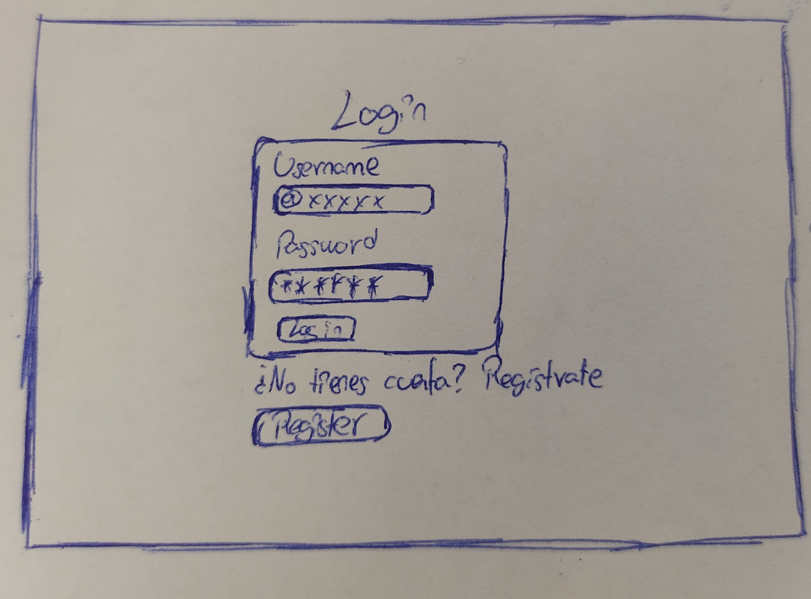
En el centro de esta interfaz tendremos un cuadro en el que podremos registrarnos
usando nuestro username, con formato @username, y contraseña con un mínimo de complejidad.
Debajo de este cuadro podremos ver un texto que nos indica un botón para crearnos una cuenta
en el caso de que no tengamos una.
Si el usuario tiene una cuenta, al iniciar sesión será redirigido a la interfaz principal.
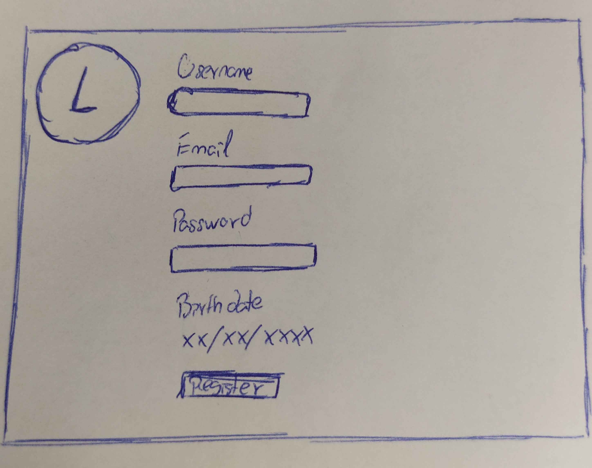
Al haber hecho click en el botón de registrarse de la página de inicio
nos aparecerán los campos a rellenar para crear nuestra cuenta.
Estos campos serán nuestro username, el correo electrónico, la contraseña
y nuestra fecha de nacimiento.
Al rellenar estos campos correctamente y al hacer click en el botón de registro
habremos creado una nueva cuenta y nos redirigirá a la interfaz principal de la aplicación.
Interfaz principal
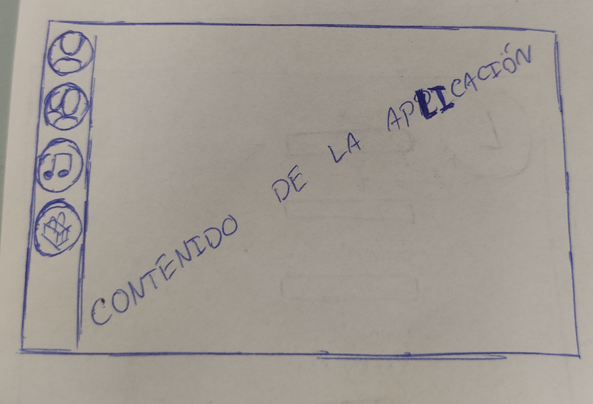
La interfaz principal será la interfaz que el usuario vea al iniciar sesión y está formada por una barra lateral izquierda que
será persistente en todas las demás interfaces y que mostrará en el centro cualquier
funcionalidad que desee el usuario, ya que esta será configurable desde
el apartado Perfil > Preferencias > Interfaz de inicio.
Esta barra esta formada por distintos iconos que indexan la funcionalidad que se desea utilizar(Perfil, Foro, Música y Tienda).
Además, la tienda es un botón que, al pulsarlo, desplegará el resto de sus funcionalidades(Compra de entradas, compra de merchandising y Mi carrito)
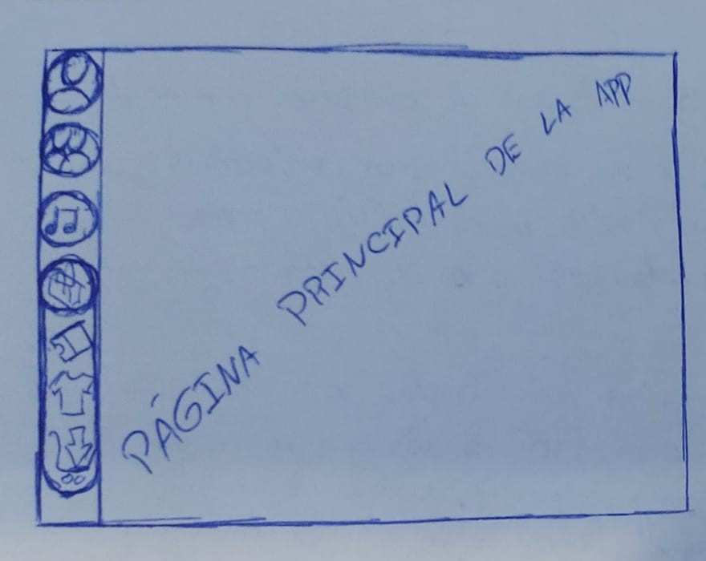
En esta interfaz podremos observar la diferentes funcionalidades disponibles en el apartado de la tienda
desplegados cuando el usuario hace click sobre ella.
Al hacer click sobre alguna de estas funcionalidades nos aparecerá en el centro la interfaz de la funcionalidad seleccionada
y el menú desplegado de la tineda se contraerá automáticamente.
Foro
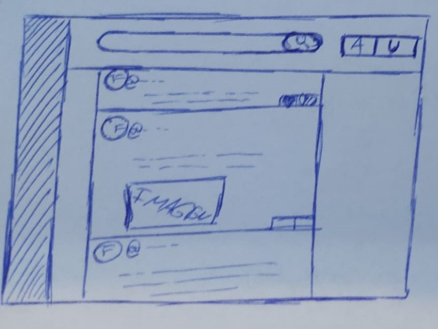
En el centro se podrán visualizar las distintas publicaciones de cuentas de usuarios comunes y/o cuentas de artistas musicales(los cuales seran distinguibles del resto).
De cada usuario podremos ver su foto de perfil y su nombre de usuario con el formato @username.
Cada publicación estará compuesta o no por un texto e imagen a elección del usuario y tendrá una selección de botones para interactuar con este.
Estos botones nos permitirán votar de forma positiva la publicación y responder a ella con una publicación compuesta por los estos mismos elementos
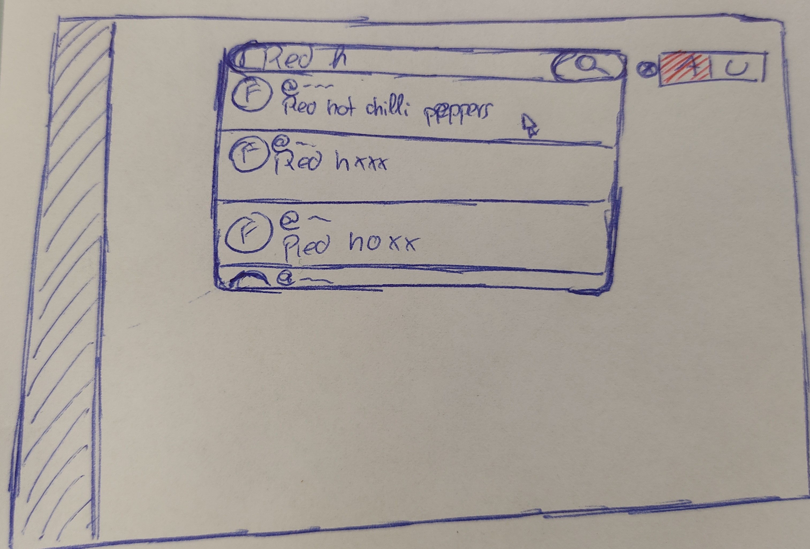
Al hacer click en la barra de búsqueda esta se desplegará y, a medida que vayamos escribiendo, nos irá mostrando
distintos perfiles de usuarios o artistas que concuerden con los datos introducidos por el usuario.
a la derecha tendremos disponible un botón que nos permitirá añadir un filtro para solo buscar usuarios corrientes, artistas o ambos.
Musica
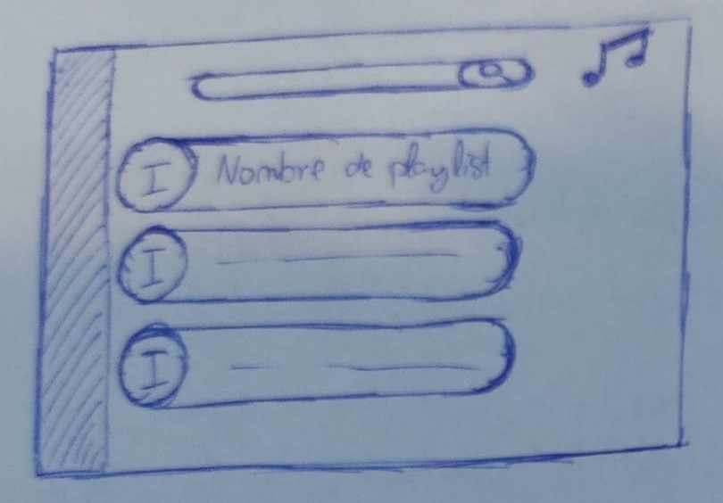
Esta interfaz mostrará todas las playlists creadas por el usuario y sus artistas favoritos.
Los iconos de sus artistas favoritos serán una imagen con el nombre del grupo que servirá como enlace perfil oficial de estos.
Las playlists que aparecerán en este apartado serán todas las que este cree con un nombre, que debe ser único en su lista de playlists, y un imagen como portada.
Esta imagen será un icono circular sencillo monocromático único como portada que será
asignado por defecto al crear la playlist y que podrá ser reasignado por el usuario antes o después de crear la playlist.
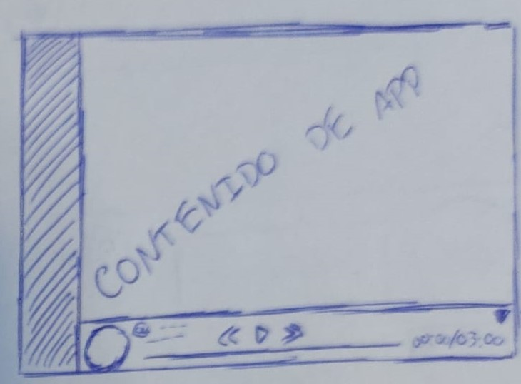
Esta interfaz muestra la barra de reproducción de música en la parte inferior de la pantalla cuando esta está desplegada.
Esta barra será visualizable e interactuable durante el uso de cualquier otra funcionalidad de la aplicación.
En esta barra se podrá ver información acerca de la canción en reproducción como su portada, nombre, creador,
la duración de reproducción actual, la duración total y un icono para ocultar la barra.
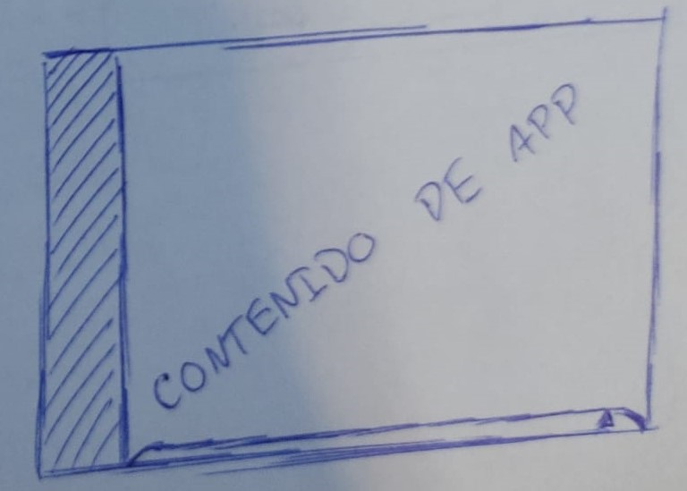
Esta interfaz muestra cómo se verá la barra de reproducción cuando esta está contraída.
En este estado no se podrá visualizar ningún tipo de información más alla de una pequeña linea de color que
llega hasta un botón y que representa la reproducción actual respecto a la duración total.
El único botón que se podrá ver es una pequeña flecha para poder volver a desplegar la barra de reproducción al completo.
Perfil
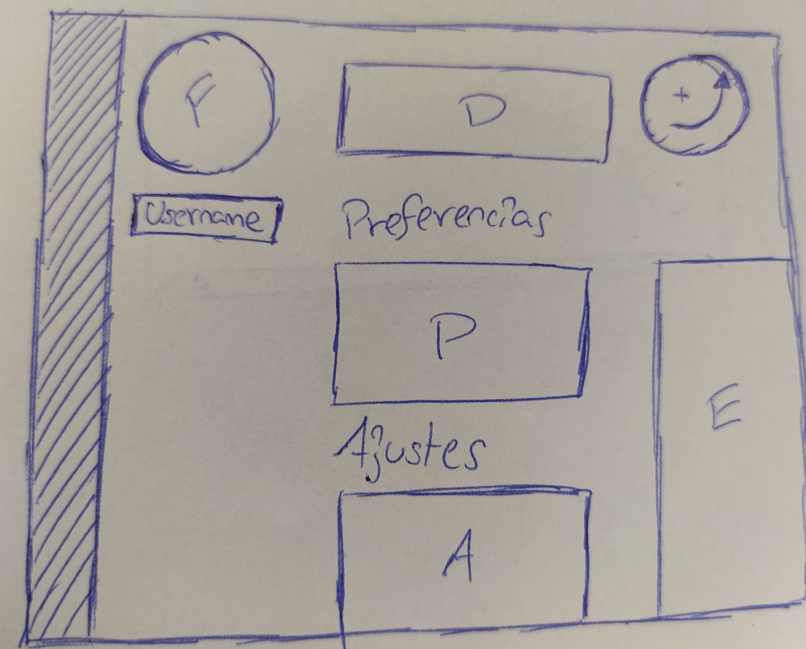
Esta interfaz mostrará todos los diferentes ajustes, preferencias y configuraciones de perfil que podrá realizar el usuario.
En la parte superior izquierda se podrá ver la imagen de perfil del usuario contenida en un marco circular.
Debajo de esta se podrá ver el nombre de usuario, que deberá ser único al resto de nombres de usuario, con el formato @username.
A la derecha de la imagen el usuario podrá añadir de forma opcional un texto a modo de descripción
que puede incluir texto y variedad de emoticonos.
Debajo de todo ello aparecerá una lista de ajustes y preferencias que el usuario que podrá configurar.
Estos estarán formados por un breve texto representativo precedidos por un botón de on/off o combo-boxes.
En el margen derecho se podrá visualizar un texto más detallado de la funcionalidad de estos ajustes y/o sus efectos y requerimientos al ser clickados por el usuario.
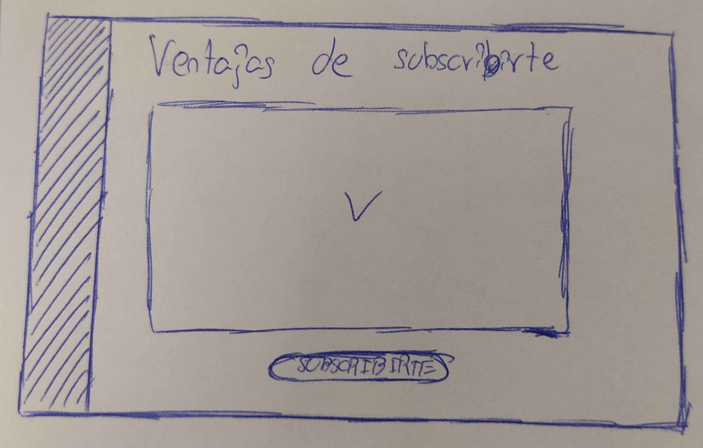
En esta interfaz el usuario podrá consultar todas las ventajas de la subscripción
de forma detallada y, al final del todo, comprarla utilizando un botón en pantalla.
Tras ello, podrá proceder a la compra y disfrutar de todas las ventajas mencionadas en el texto superior.
Tienda
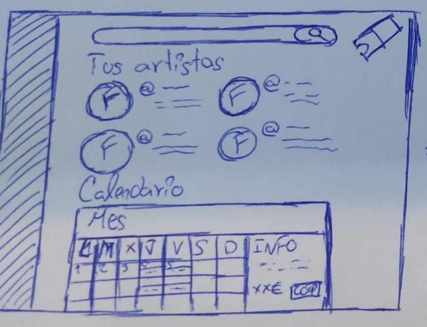
En la parte superior podremos interactuar con una barra de búsqueda para encontrar diferentes entradas a eventos de cualquier artista que desee.
A continuación podremos visualizar los artistas a los que seguimos,
estos se mostrarán con su imagen de perfil en un marco circular, su nombre de usuario y
un poco de información relevante a la compra de entradas(conciertos más próximos, ofertas actuales, etc...)
Se mostrarán varios de ellos y, si hay más, se visualizará un botón para ver más.
Debajo de toda esta información se podrá ver un calendario interactuable para poder comprar entradas de una forma más visual.
En este calendario podremos ver marcado el día actual y todos los días en los que alguno de nuestros artistas favoritos tenga entradas disponibles.
Al hacer click en alguno de estos días, se desplegará un pequeño menú con todas las entradas disponibles de cualquiera de nuestros artistas en ese día.
En este menú podremos seleccionar a qué evento desearemos asitir y, al hacerlo, nos aparaecerá una
ventana en el centro que nos permitiriá seleccionar qué tipo y cantidad de entradas querremos, así como información adicional relevante.
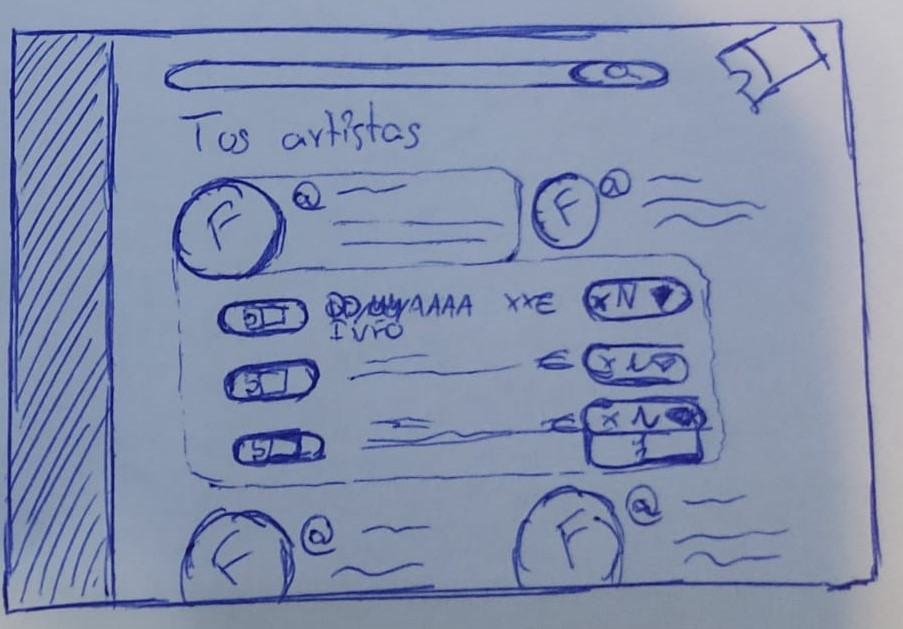
Al hacer click sobre uno de estos artistas favoritos se desplegará un pequeño menú
que nos mostrará las entradas ofertadas junto a información relevante como la fecha,
hora, lugar, precio y cantidad de estas.
Al hacer click en el botón de comprar aparecerá
la interfaz de compra para proceder con la confirmación y pago.
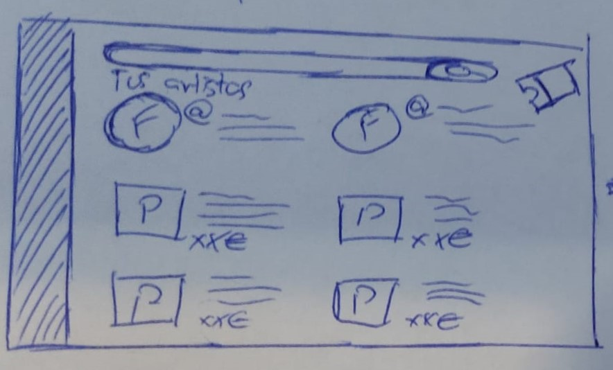
En la parte superior podremos interactuar con una barra de búsqueda para encontrar
un producto concreto o la página de merchandising de un artista.
Cada producto será visualizado con una imagen general, un nombre, una breve descripción y el precio de este.
A continuación podremos ver los artistas favoritos del usuario mediante la imagen de perfil del artista y su nombre de usuario.
Debajo podremos ver una lista de productos variados de diferentes artistas, los cuales se podrán
visualizar filtrados por tipo(camisetas, sudaderas, tazas, posters, etc...)
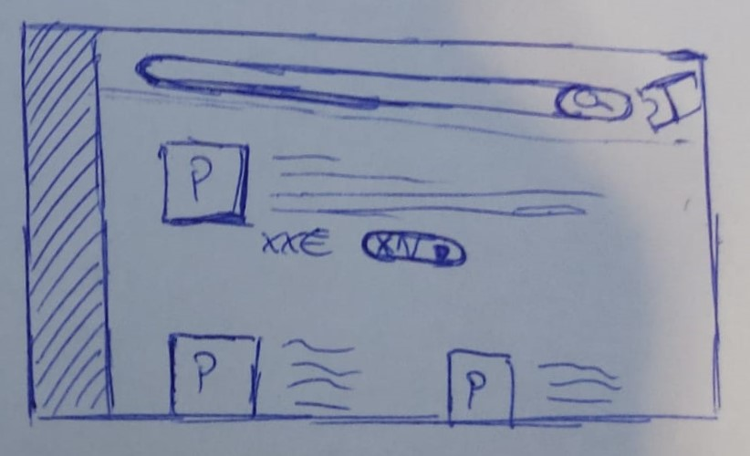
Al hacer click sobre uno de los productos se podrá ver su información más detallada.
Podremos ver la imagen en un mayor tamaño, además de poder visualizar más imágenes de este. Además podremos
leer su descripción y especificaciones más en detalle y seleccionar una cantidad para añadir al carrito.
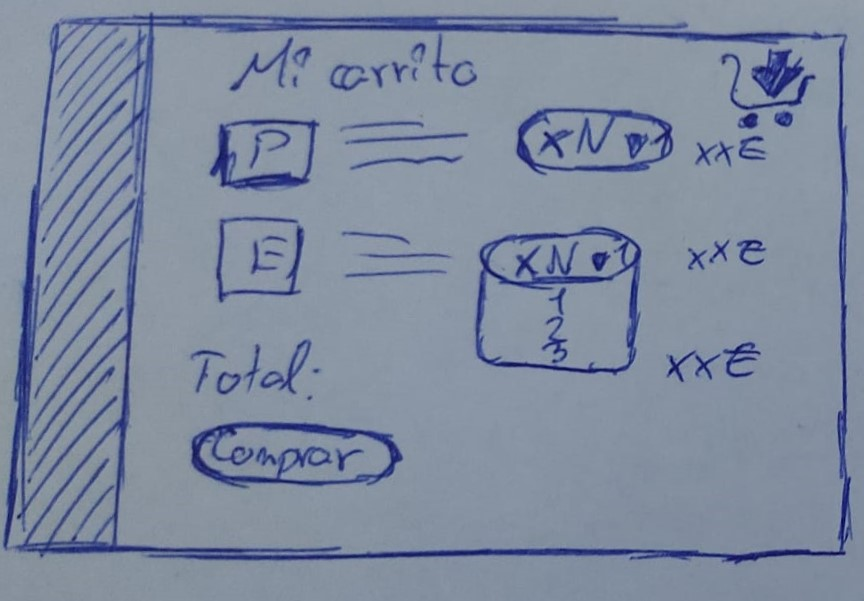
En la interfaz el carrito podremos ver una lista de todos los productos que el usuario
ha añadido al carrito, tanto merchandising como entradas.
Estos se mostrarán con su imagen representativa, su nombre, el número de existencias que deseamos
y el precio del total de todas las existencias juntas.
Al final podremos ver la cantidad total a pagar junto a un boton para proceder con la compra.
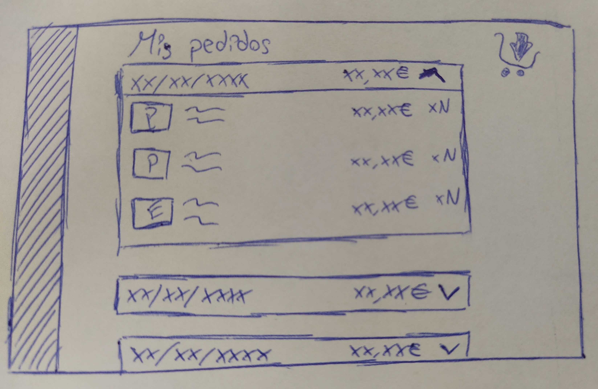
En el apartado mis pedidos podremos ver todos los pedidos
hechos por el usuario con su fecha de solicitud.
Al hacer click en ellos se podrña visualizar todos
los productos , el precio de cada uno de ellos y el total de la compra.